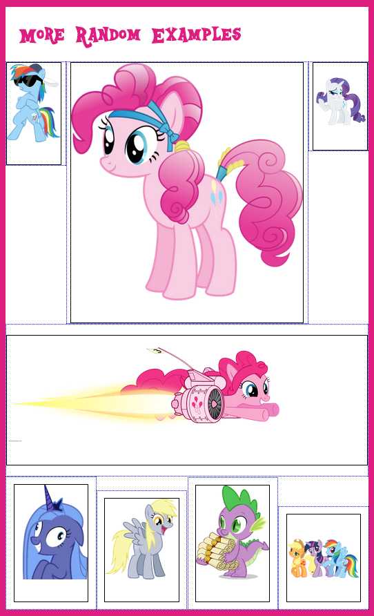
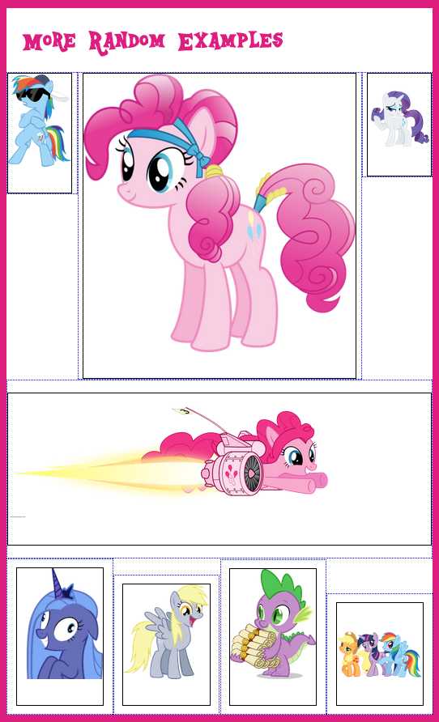
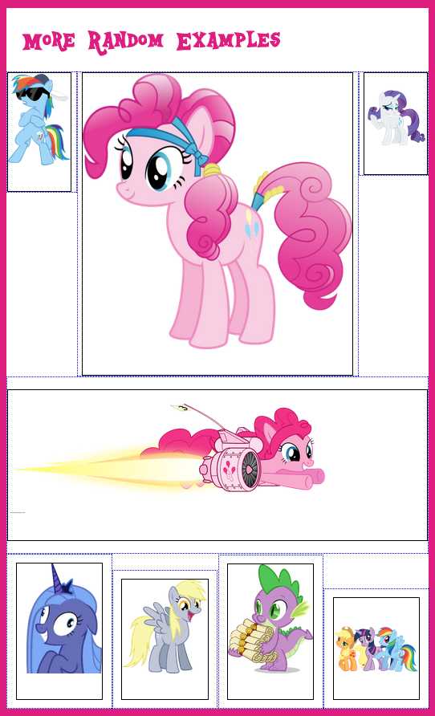

Version 0.1
Inclue this file to easily generate widths/padding for items and build items which conform to a grid for your site. Or, use Magic Grid to create a fully responsive equal-sized grid instantly! No more dealing with annoying floats, rows, and clears! Using the magic of display: inline-block
Use @include pinkgrid() to generate widths and padding for your own class-based grid system ( 1col, 2col, full, etc. ) or simply add directly to items.
Use@include pinkrow() to adjust the width and outer padding of the outer elements.
Use @include pinkgridrow() to create rows where all items should be the same width.
Use with media queries for even more responsive goodness!
Don’t want to write media queries? If you need evenly-sized items per row (like a photo gallery or content blocks) just use @include pinkmagic and don’t even worry about it, because I did all the math for you! Works for any number items per row :)
Use of @pinkgrid() plus @pinkrow() is best with items that will not span equal columns (5+7, 3+6+3, etc) because the container widths stay the same even when the outer padding on each row is removed. For equally sized items (like in a photo grid), use @pinkgridrow() which adjusts the width of the outer containers to keep the content areas all the same width.
@include pinkgrid( $align, $totalcols, $colspan, $padtop, $padside )
@include pinkrow( $rowitems, $before, $after )
pinkgridrow( $align, $padtop, $padside, $rowitems, $before, $after )
@include pinkmagic( $rowitems, $padtop, $padside, $align, $before, $after )
$magicrow: 4; - Change this value to set the global default number of items per row
$magictop: 10px; - Change this value to set the global default of top padding
$magicside: 2%; - Change this value to set the global default of side padding
$magicalign: top; - Change this value to set the global default of vertical-align
$tiny-bp: 300px; - Change this value to set your tiny breakpoint
$sm-bp: 480px; - Change this value to set your small breakpoint
$med-bp: 720px; - Change this value to set your medium breakpoint
$lg-bp: 980px; - Change this value to set your large breakpoint
$xl-bp: 1200px; - Change this value to set your x-large breakpoint
$rowitems: Number of items per row ( ex. 4 ) - Defaults to 1
$padside: If $autopad is false, it will use this value to manually add side padding. - Defaults to $defaultpad
$padtop: Percentage padding above/below around each item. - Defaults to $magictop
$align Vertical-align property - Defaults to Top
$before: Alternating row layouts: elements before this row - Defaults to 0
$after: Alternating row layouts: elements after this row - Defaults to 0
For example:
@include pinkgrid( $colspan: 3 ) will generate an object that spans 3 out of 12 columns ( 25% ) with 1% padding
@include pinkgrid( $totalcols: 6, $colspan: 3 ) will generate an object that spans 3 out of 6 ( 50% ) columns with 1% padding
@include pinkgrid( $colspan: 3 ) @include pinkrow( $rowitems: 4 ) will generate an object that spans 3 out of 12 columns ( 25% ) but will remove the outside padding of the first and last item in each row of 4 items
@include pinkgridrow( $rowitems: 4 ) will generate a grid with 4 items per row for all items with that class, with the content area inside the containers spanning an equal width for each item.
@include pinkmagic( $rowitems: 8 ) will generate a fully responsive grid for all items with that class, with 8 items across, complete with breakpoints
Check out the example html/scss files for more ideas!
Here’s a live version of the site to see examples.
